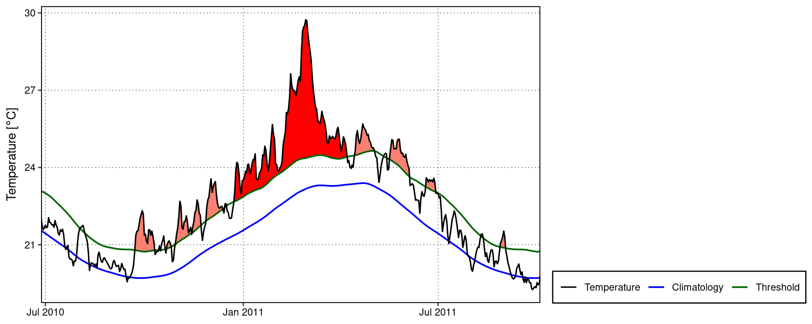
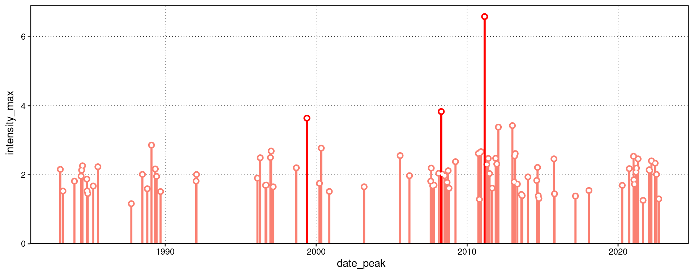
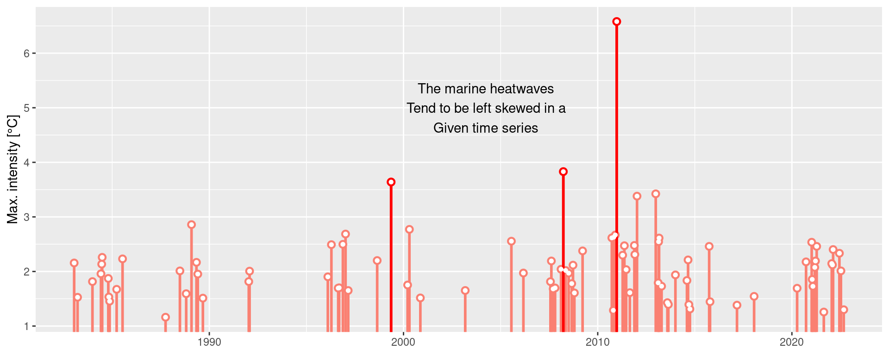
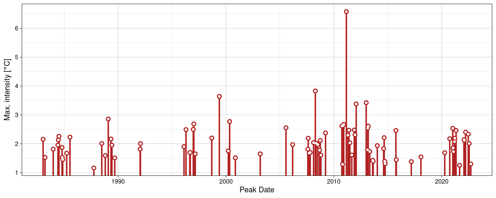
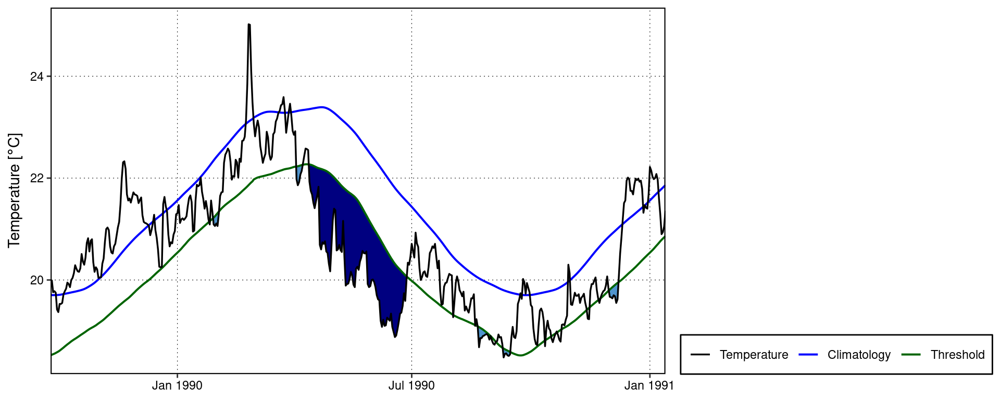
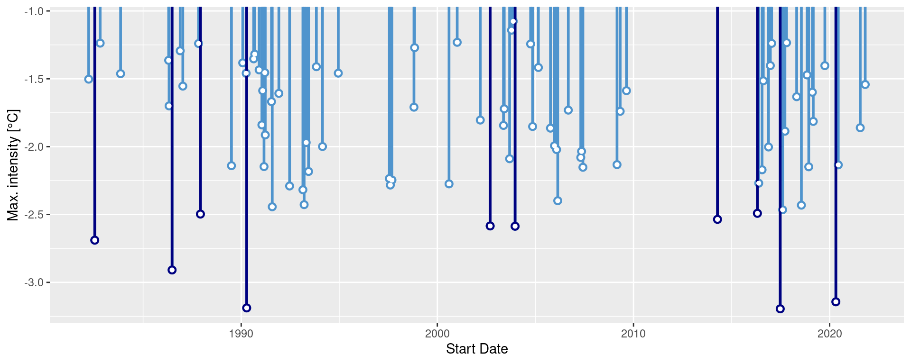
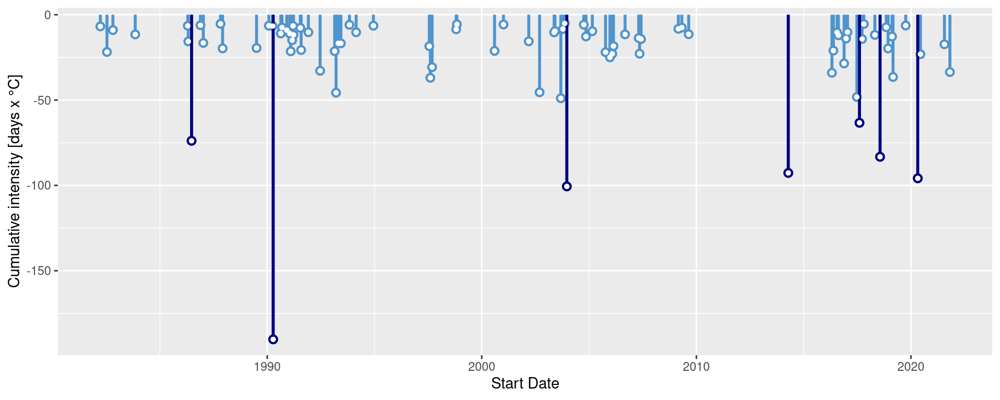

# First install the required packages
# NB: We don't want to load 'plyr', just install it
new_packages <- c("tidyverse", "tidync", "heatwaveR", "rerddap", "doParallel", "plyr")
install.packages(setdiff(new_packages, rownames(installed.packages())))
# We start by loading the full suite of tidyverse packages
library(tidyverse, quietly = TRUE)
# And a package for tidy NetCDF files
library(tidync)
# Then we load the main package used for detecting MHWs
library(heatwaveR)
# Another used to download data
library(rerddap)
# And finally one that let's us work on multiple cores
library(doParallel)heatwaveR training session
Overview
In this training session we will walk through a workflow for detecting marine heatwaves (MHWs) with the heatwaveR package that should be applicable to and useful for most use cases. One should note that we are assuming a basic knowledge of the Hobday et al. (2016, 2018) MHW definition. If a refresher is desirable, an interactive version is available here.
For this training session we will make use of the following packages:
MHW detection
The detect_event() function is the core of the heatwaveR package. It expects to be fed the output of the second core function, ts2clm(). By default, ts2clm() wants to receive a two-column dataframe with one column labelled t containing all of the date values, and a second column temp containing all of the temperature values. Please note that the date format it expects is “YYYY-MM-DD”, e.g.:
head(heatwaveR::sst_WA)# A tibble: 6 × 2
t temp
<date> <dbl>
1 1982-01-01 20.9
2 1982-01-02 21.2
3 1982-01-03 21.4
4 1982-01-04 21.2
5 1982-01-05 21.3
6 1982-01-06 21.6Here are the ts2clm() and detect_event() function applied to the Western Australia test data:
# Detect the events in a time series
ts <- ts2clm(sst_WA, climatologyPeriod = c("1982-01-01", "2011-12-31"))
mhw <- detect_event(ts)
# View just a few metrics
mhw$event |>
dplyr::ungroup() |>
dplyr::select(event_no, duration, date_start, date_peak, intensity_max, intensity_cumulative) |>
dplyr::arrange(-intensity_max) |>
head(5)# A tibble: 5 × 6
event_no duration date_start date_peak intensity_max intensity_cumulative
<int> <dbl> <date> <date> <dbl> <dbl>
1 52 105 2010-12-24 2011-02-28 6.58 293.
2 41 35 2008-03-25 2008-04-14 3.83 79.3
3 29 95 1999-05-13 1999-05-22 3.64 240.
4 60 14 2012-12-27 2012-12-31 3.42 32.3
5 59 101 2012-01-10 2012-01-27 3.38 214. How might these results change with a different
climatologyPeriod?
MHW visualisation
Default MHW visuals
One may use event_line() and lolli_plot() directly on the output of detect_event(). For example, the massive Western Australia heatwave of 2011:
event_line(mhw, spread = 180, metric = "intensity_max",
start_date = "1982-01-01", end_date = "2014-12-31")
lolli_plot(mhw, metric = "intensity_max")
What are some other ways to use
lolli_plot()?
Custom MHW visuals
There are custom geoms in the heatwaveR package that help us to visualise MHWs. To use these we must first access the climatology or event dataframes produced by detect_event(). Here is how:
# Select the region of the time series of interest
mhw2 <- mhw$climatology |>
slice(10580:10720)
ggplot(mhw2, aes(x = t, y = temp, y2 = thresh)) +
heatwaveR::geom_flame() +
geom_text(aes(x = as.Date("2011-02-25"), y = 25.8, label = "the Destroyer\nof Kelps"))ggplot(mhw$event, aes(x = date_start, y = intensity_max)) +
heatwaveR::geom_lolli(colour = "salmon", colour_n = "red", n = 3) +
annotate(geom = "text", colour = "black", x = as.Date("2004-04-01"), y = 5,
label = "The marine heatwaves\nTend to be left skewed in a\nGiven time series") +
labs(y = "Max. intensity [°C]", x = NULL)
Spicy MHW visuals
The default output of these function may not be to your liking. If so, not to worry, the code is very malleable. If we wanted to reproduce the format of the MHWs as seen in Hobday et al. (2016), for example, the code would look something like this:
# It is necessary to give geom_flame() at least one row on either side of
# the event in order to calculate the polygon corners smoothly
mhw_top <- mhw2 |>
slice(5:111)
ggplot(data = mhw2, aes(x = t)) +
geom_flame(aes(y = temp, y2 = thresh, fill = "all"), show.legend = T) +
geom_flame(data = mhw_top, aes(y = temp, y2 = thresh, fill = "top"), show.legend = T) +
geom_line(aes(y = temp, colour = "temp")) +
geom_line(aes(y = thresh, colour = "thresh"), linewidth = 1.0) +
geom_line(aes(y = seas, colour = "seas"), linewidth = 1.2) +
scale_colour_manual(name = "Line Colour",
values = c("temp" = "black",
"thresh" = "forestgreen",
"seas" = "grey80")) +
scale_fill_manual(name = "Event Colour",
values = c("all" = "salmon",
"top" = "red")) +
scale_x_date(date_labels = "%b %Y") +
guides(colour = guide_legend(override.aes = list(fill = NA))) +
labs(y = expression(paste("Temperature [", degree, "C]")), x = NULL)It is also worth pointing out that when we use geom_flame() directly like this, but we don’t want to highlight events greater less than our standard five day length, allowing for a two day gap, we want to use the arguments n and n_gap respectively.
mhw3 <- mhw$climatology |>
slice(850:950)
ggplot(mhw3, aes(x = t, y = temp, y2 = thresh)) +
geom_flame(fill = "black", alpha = 0.5) +
# Note the use of n = 5 and n_gap = 2 below
geom_flame(n = 5, n_gap = 2, fill = "red", alpha = 0.5) +
ylim(c(22, 25)) +
geom_text(colour = "black", aes(x = as.Date("1984-05-16"), y = 24.5,
label = "heat\n\n\n\n\nspike"))Should we not wish to highlight any events with geom_lolli(), plot them with a colour other than the default, and use a different theme, it would look like this:
ggplot(mhw$event, aes(x = date_peak, y = intensity_max)) +
geom_lolli(colour = "firebrick") +
labs(x = "Peak Date",
y = expression(paste("Max. intensity [", degree, "C]")), x = NULL) +
theme_linedraw()
What other ways can you think of to change the appearance of the MHW results?
MCS detection
The detection and visualisation of marine cold-spells (MCSs) is also possible. The main difference from detecting MHWs is that one uses the 10th percentile threshold, rather than the 90th. Here are the top five cold-spells (cumulative intensity) detected in the OISST data for Western Australia:
# First calculate the cold-spells
# NB: Note the `coldSpells = TRUE` argument
ts_10th <- ts2clm(sst_WA, climatologyPeriod = c("1982-01-01", "2011-12-31"), pctile = 10)
mcs <- detect_event(ts_10th, coldSpells = TRUE)
# Then look at the top few events
mcs$event |>
dplyr::ungroup() |>
dplyr::select(event_no, duration, date_start,
date_peak, intensity_mean, intensity_max, intensity_cumulative) |>
dplyr::arrange(intensity_cumulative) |>
head(5)# A tibble: 5 × 7
event_no duration date_start date_peak intensity_mean intensity_max
<int> <dbl> <date> <date> <dbl> <dbl>
1 15 76 1990-04-13 1990-05-11 -2.50 -3.19
2 49 58 2003-12-19 2004-01-23 -1.73 -2.59
3 83 41 2020-04-26 2020-05-25 -2.34 -3.14
4 64 52 2014-04-14 2014-05-05 -1.78 -2.54
5 77 46 2018-07-24 2018-08-02 -1.81 -2.43
# ℹ 1 more variable: intensity_cumulative <dbl>What is the first difference you notice between the output of MHW vs MCS detection?
MCS visualisation
Default MCS visuals
The default MCS plots:
event_line(mcs, spread = 200, metric = "intensity_cumulative",
start_date = "1982-01-01", end_date = "2014-12-31")
lolli_plot(mcs, metric = "intensity_cumulative", xaxis = "event_no")Note that one does not need to specify that MCSs are to be visualised, the functions are able to understand this on their own.
Custom MCS visuals
Cold spell figures may be created as geoms in ggplot2, too:
# Select the region of the time series of interest
mcs2 <- mcs$climatology |>
slice(2900:3190)
# Note that one must specify a colour other than the default 'salmon'
ggplot(mcs2, aes(x = t, y = thresh, y2 = temp)) +
geom_flame(fill = "steelblue3")ggplot(mcs$event, aes(x = date_start, y = intensity_max)) +
geom_lolli(colour = "steelblue3", colour_n = "navy", n = 10) +
labs(x = "Start Date",
y = "Max. intensity [°C]")
Minty MCS visuals
Again, because geom_flame() and geom_lolli() are simple ggplot2 geoms, one can go completely bananas with them:
mcs_top <- mcs2 |>
slice(125:202)
ggplot(data = mcs2, aes(x = t)) +
geom_flame(aes(y = thresh, y2 = temp, fill = "all"), show.legend = T) +
geom_flame(data = mcs_top, aes(y = thresh, y2 = temp, fill = "top"), show.legend = T) +
geom_line(aes(y = temp, colour = "temp")) +
geom_line(aes(y = thresh, colour = "thresh"), linewidth = 1.0) +
geom_line(aes(y = seas, colour = "seas"), linewidth = 1.2) +
scale_colour_manual(name = "Line Colour",
values = c("temp" = "black", "thresh" = "forestgreen", "seas" = "grey80")) +
scale_fill_manual(name = "Event Colour", values = c("all" = "steelblue3", "top" = "navy")) +
scale_x_date(date_labels = "%b %Y") +
guides(colour = guide_legend(override.aes = list(fill = NA))) +
labs(y = expression(paste("Temperature [", degree, "C]")), x = NULL)ggplot(mcs$event, aes(x = date_start, y = intensity_cumulative)) +
geom_lolli(colour = "steelblue3", colour_n = "navy", n = 7) +
labs( x = "Start Date", y = "Cumulative intensity [days x °C]")
How would you plot MCSs differently to these examples?
MHW categories
The categories of MHWs under the Hobday et al. (2018) naming scheme may be calculated with the heatwaveR package using the category() function on the output of the detect_event() function. Because we have calculated MHWs on the Western Australia data, we provide the name “WA” below:
# Detect events
ts <- ts2clm(sst_WA, climatologyPeriod = c("1982-01-01", "2011-12-31"))
MHW <- detect_event(ts)
MHW_cat <- category(MHW, S = TRUE, name = "WA")
# Look at the top few events
tail(MHW_cat)# A tibble: 6 × 11
event_no event_name peak_date category i_max duration p_moderate p_strong
<int> <fct> <date> <chr> <dbl> <dbl> <dbl> <dbl>
1 60 WA 2012b 2012-12-31 II Strong 3.42 14 64 36
2 29 WA 1999 1999-05-22 II Strong 3.64 95 63 37
3 47 WA 2009 2009-03-25 II Strong 2.38 7 57 43
4 72 WA 2015 2015-10-02 II Strong 2.46 7 57 43
5 41 WA 2008a 2008-04-14 III Severe 3.83 35 57 23
6 52 WA 2011a 2011-02-28 IV Extreme 6.58 105 52 27
# ℹ 3 more variables: p_severe <dbl>, p_extreme <dbl>, season <chr>Note that this functions expects the data to have been collected in the southern hemisphere, hence the argument S = TRUE. If they were not, one must set S = FALSE as seen in the example below. This ensures that the correct seasons are attributed to the event.
res_Med <- detect_event(ts2clm(sst_Med, climatologyPeriod = c("1982-01-01", "2011-12-31")))
res_Med_cat <- category(res_Med, S = FALSE, name = "Med")
tail(res_Med_cat)# A tibble: 6 × 11
event_no event_name peak_date category i_max duration p_moderate p_strong
<int> <fct> <date> <chr> <dbl> <dbl> <dbl> <dbl>
1 30 Med 2003a 2003-06-20 II Strong 5.05 30 53 47
2 98 Med 2018b 2018-08-04 II Strong 4.75 44 52 48
3 67 Med 2012b 2012-08-20 II Strong 4.32 18 44 56
4 46 Med 2007c 2007-04-25 III Severe 4.05 19 42 53
5 75 Med 2014 2014-10-18 II Strong 3.34 144 39 60
6 96 Med 2018a 2018-04-28 II Strong 3.32 11 27 73
# ℹ 3 more variables: p_severe <dbl>, p_extreme <dbl>, season <chr>Default MHW category visuals
A quick and easy visualisation of the categories of a MHW may be accomplished with event_line() by setting the category argument to TRUE.
event_line(MHW, spread = 100, start_date = "2010-11-01", end_date = "2011-06-30", category = TRUE)Custom MHW category visuals
Were one to want to visualise the categories of a MHW ‘by hand’, the following code will provide a good starting point.
# Create category breaks and select slice of data.frame
clim_cat <- MHW$clim |>
dplyr::mutate(diff = thresh - seas,
thresh_2x = thresh + diff,
thresh_3x = thresh_2x + diff,
thresh_4x = thresh_3x + diff) |>
dplyr::slice(10580:10690)
# Set line colours
lineColCat <- c(
"Temperature" = "black",
"Climatology" = "gray20",
"Threshold" = "darkgreen",
"2x Threshold" = "darkgreen",
"3x Threshold" = "darkgreen",
"4x Threshold" = "darkgreen"
)
# Set category fill colours
fillColCat <- c(
"Moderate" = "#ffc866",
"Strong" = "#ff6900",
"Severe" = "#9e0000",
"Extreme" = "#2d0000"
)
ggplot(data = clim_cat, aes(x = t, y = temp)) +
geom_flame(aes(y2 = thresh, fill = "Moderate")) +
geom_flame(aes(y2 = thresh_2x, fill = "Strong")) +
geom_flame(aes(y2 = thresh_3x, fill = "Severe")) +
geom_flame(aes(y2 = thresh_4x, fill = "Extreme")) +
geom_line(aes(y = thresh_2x, col = "2x Threshold"), size = 0.7, linetype = "dashed") +
geom_line(aes(y = thresh_3x, col = "3x Threshold"), size = 0.7, linetype = "dotdash") +
geom_line(aes(y = thresh_4x, col = "4x Threshold"), size = 0.7, linetype = "dotted") +
geom_line(aes(y = seas, col = "Climatology"), size = 0.7) +
geom_line(aes(y = thresh, col = "Threshold"), size = 0.7) +
geom_line(aes(y = temp, col = "Temperature"), size = 0.6) +
scale_colour_manual(name = NULL, values = lineColCat,
breaks = c("Temperature", "Climatology", "Threshold",
"2x Threshold", "3x Threshold", "4x Threshold")) +
scale_fill_manual(name = NULL, values = fillColCat, guide = FALSE) +
scale_x_date(date_labels = "%b %Y") +
guides(colour = guide_legend(override.aes = list(linetype = c("solid", "solid", "solid",
"dashed", "dotdash", "dotted"),
size = c(0.6, 0.7, 0.7, 0.7, 0.7, 0.7)))) +
labs(y = "Temperature [°C]", x = NULL)MCS categories
MCSs are calculated the same as for MHWs. The category() function will automagically detect if it has been fed MHWs or MCSs so no additional arguments are required. For the sake of clarity the following code chunks demonstrates how to calculate MCS categories.
# Calculate events
ts_MCS <- ts2clm(sst_WA, climatologyPeriod = c("1982-01-01", "2011-12-31"), pctile = 10)
MCS <- detect_event(ts_MCS, coldSpells = T)
MCS_cat <- category(MCS, S = TRUE, name = "WA")
# Look at the top few events
tail(MCS_cat)# A tibble: 6 × 11
event_no event_name peak_date category i_max duration p_moderate p_strong
<int> <fct> <date> <chr> <dbl> <dbl> <dbl> <dbl>
1 77 WA 2018a 2018-08-02 II Strong -2.43 46 67 33
2 40 WA 2000 2000-08-13 II Strong -2.27 11 64 36
3 15 WA 1990 1990-05-11 II Strong -3.19 76 62 38
4 53 WA 2005 2005-10-16 II Strong -1.86 13 62 38
5 83 WA 2020 2020-05-25 II Strong -3.14 41 61 39
6 11 WA 1987 1987-12-10 II Strong -2.50 9 44 56
# ℹ 3 more variables: p_severe <dbl>, p_extreme <dbl>, season <chr>Visualising MCS categories
Default MCS category visuals
The event_line() function also works for visualising MCS categories. The function will automagically detect that it is being fed MCSs so we do not need to provide it with any new arguments. Note that the colour palette for MCS does have four colours, same as for MHWs, but none of the demo time series that come packaged with heatwaveR have MCSs that intense so we are not able to demonstrate the full colour palette here.
event_line(MCS, spread = 100, start_date = "1989-11-01", end_date = "1990-06-30", category = TRUE)Custom MCS category visuals
The following code chunk demonstrates how to manually create a figure showing the MCS categories.
# Create category breaks and select slice of data.frame
MCS_clim_cat <- MCS$clim |>
dplyr::mutate(diff = thresh - seas,
thresh_2x = thresh + diff,
thresh_3x = thresh_2x + diff,
thresh_4x = thresh_3x + diff) |>
dplyr::slice(2910:3150)
# Set line colours
lineColCat <- c(
"Temperature" = "black",
"Climatology" = "grey40",
"Threshold" = "darkorchid",
"2x Threshold" = "darkorchid",
"3x Threshold" = "darkorchid",
"4x Threshold" = "darkorchid"
)
# Set category fill colours
fillColCat <- c(
"Moderate" = "#C7ECF2",
"Strong" = "#85B7CC",
"Severe" = "#4A6A94",
"Extreme" = "#111433"
)
# Create plot
ggplot(data = MCS_clim_cat, aes(x = t, y = temp)) +
geom_flame(aes(y = thresh, y2 = temp, fill = "Moderate")) +
geom_flame(aes(y = thresh_2x, y2 = temp, fill = "Strong")) +
geom_flame(aes(y = thresh_3x, y2 = temp, fill = "Severe")) +
geom_flame(aes(y = thresh_4x, y2 = temp, fill = "Extreme")) +
geom_line(aes(y = thresh_2x, col = "2x Threshold"), size = 0.7, linetype = "dashed") +
geom_line(aes(y = thresh_3x, col = "3x Threshold"), size = 0.7, linetype = "dotdash") +
geom_line(aes(y = thresh_4x, col = "4x Threshold"), size = 0.7, linetype = "dotted") +
geom_line(aes(y = seas, col = "Climatology"), size = 0.7) +
geom_line(aes(y = thresh, col = "Threshold"), size = 0.7) +
geom_line(aes(y = temp, col = "Temperature"), size = 0.6) +
scale_colour_manual(name = NULL, values = lineColCat,
breaks = c("Temperature", "Climatology", "Threshold",
"2x Threshold", "3x Threshold", "4x Threshold")) +
scale_fill_manual(name = NULL, values = fillColCat, guide = FALSE) +
scale_x_date(date_labels = "%b %Y") +
guides(colour = guide_legend(override.aes = list(linetype = c("solid", "solid", "solid",
"dashed", "dotdash", "dotted"),
size = c(0.6, 0.7, 0.7, 0.7, 0.7, 0.7)))) +
labs(y = "Temperature [°C]", x = NULL)Category colour palettes
For the sake of convenience the MHW and MCS colour palettes are provided below with a figure showing the direct comparison.
# The MCS colour palette
MCS_colours <- c(
"Moderate" = "#C7ECF2",
"Strong" = "#85B7CC",
"Severe" = "#4A6A94",
"Extreme" = "#111433"
)
# The MHW colour palette
MHW_colours <- c(
"Moderate" = "#ffc866",
"Strong" = "#ff6900",
"Severe" = "#9e0000",
"Extreme" = "#2d0000"
)
# Create the colour palette for plotting by itself
colour_palette <- data.frame(category = factor(c("I Moderate", "II Strong", "III Severe", "IV Extreme"),
levels = c("I Moderate", "II Strong", "III Severe", "IV Extreme")),
MHW = c(MHW_colours[1], MHW_colours[2], MHW_colours[3], MHW_colours[4]),
MCS = c(MCS_colours[1], MCS_colours[2], MCS_colours[3], MCS_colours[4])) |>
pivot_longer(cols = c(MHW, MCS), names_to = "event", values_to = "colour")
# Show the palettes side-by-side
ggplot(data = colour_palette, aes(x = category, y = event)) +
geom_tile(fill = colour_palette$colour) +
coord_cartesian(expand = F) +
labs(x = NULL, y = NULL)
Subset data download
For this training session we will see how to retrieve and prepare Reynolds optimally interpolated sea surface temperature (OISST) data for detecting marine heatwaves (MHWs). The OISST product is a global 1/4 degree gridded dataset of Advanced Very High Resolution Radiometer (AVHRR) derived SSTs at a daily resolution, starting on 1 September 1981. The source of the data is currently the NOAA NCDC.
We will be accessing and subsetting the NOAA OISST dataset on this ERDDAP server. The global data are indexed here. One may download the data on both servers manually by using the ERDDAP UI or clicking on each indexed file individually. But programming languages like R are designed to prevent us from needing to experience that sort of anguish.
Each daily global file, when not compressed, is around 8.3 MB, so they add up to a large amount of data when a time series of the recommended 30 year minimum duration for the detection of MHWs is downloaded. If one were to download all of the data currently available it would exceed 100 GB of total disk space. It is therefore best practice to download only a subset of the data that matches one’s study area. Thanks to the rerddap package this is incredibly easy to do in R.
Should one want to download the full global dataset, each daily global file is available in netCDF format and is roughly 1.6 MB. This means that one full year of global data will be roughly 600 MB, and the full dataset roughly 25 GB. This is however when the data are very compressed. If we were to attempt to load the entire uncompressed dataset into our memory at once it would take more than 200 GB of RAM. That is well beyond the scope of any laptop so in the second half of this vignette we will see how to download the full OISST dataset and then see how we can load only a subset of the data into the R environment for use with further analyses.
File information
Before we begin downloading the subsetted data for our study area we need to make sure that they are currently available on an ERDDAP server. The location of the NOAA OISST data has changed in the past so it should not be assumed that the current location will exist in perpetuity. Finding the server on which these data are located can be a cup game at times.
# The information for the NOAA OISST data
rerddap::info(datasetid = "ncdcOisst21Agg_LonPM180", url = "https://coastwatch.pfeg.noaa.gov/erddap/")<ERDDAP info> ncdcOisst21Agg_LonPM180
Base URL: https://coastwatch.pfeg.noaa.gov/erddap
Dataset Type: griddap
Dimensions (range):
time: (1981-09-01T12:00:00Z, 2024-05-02T12:00:00Z)
zlev: (0.0, 0.0)
latitude: (-89.875, 89.875)
longitude: (-179.875, 179.875)
Variables:
anom:
Units: degree_C
err:
Units: degree_C
ice:
Units: 1
sst:
Units: degree_C # Note that there is also a version with lon values from 0 to 360
rerddap::info(datasetid = "ncdcOisst21Agg", url = "https://coastwatch.pfeg.noaa.gov/erddap/")<ERDDAP info> ncdcOisst21Agg
Base URL: https://coastwatch.pfeg.noaa.gov/erddap
Dataset Type: griddap
Dimensions (range):
time: (1981-09-01T12:00:00Z, 2024-05-02T12:00:00Z)
zlev: (0.0, 0.0)
latitude: (-89.875, 89.875)
longitude: (0.125, 359.875)
Variables:
anom:
Units: degree_C
err:
Units: degree_C
ice:
Units: 1
sst:
Units: degree_C With our target dataset identified we may now begin the download with the rerddap::griddap() function. Note that the ERDDAP server does not like it when one tries to access more than nine consecutive years of data in one request, regardless of the spatial extent being requested. So before we download our data we are going to make a wrapper function that helps us control the range of times we want to download. This will reduce the amount of redundant coding we would otherwise need to do.
Download function
# This function downloads and prepares data based on user provided start and end dates
OISST_sub_dl <- function(time_df, lon_range, lat_range){
OISST_dat <- rerddap::griddap(datasetx = "ncdcOisst21Agg_LonPM180",
url = "https://coastwatch.pfeg.noaa.gov/erddap/",
time = c(time_df$start, time_df$end),
zlev = c(0, 0),
latitude = lat_range,
longitude = lon_range,
fields = "sst")$data |>
dplyr::mutate(time = base::as.Date(stringr::str_remove(time, "T12:00:00Z"))) |>
dplyr::rename(t = time, temp = sst, lon = longitude, lat = latitude) |>
dplyr::select(lon, lat, t, temp) |>
stats::na.omit()
}What is this function doing?
One must note here that depending on the RAM available on one’s machine, it may not be possible to handle all of the data downloaded at once if they are very large (e.g. > 5 GB). The discussion on the limitations of the R language due to its dependence on virtual memory is beyond the scope of this training session, but if one limits one’s downloads to no more than several square pixels at a time that should be fine. Were one to try to download the whole Indian Ocean, for example, that may cause issues if being run on a laptop or computer of a similar power.
Date range
With our wrapper function written we would now need to run it several times in order to grab all of the OISST data from 1982-01-01 to 2023-12-31. Even though each year of data for the extent used in this vignette is only ~360 KB, the server does not like it when more than 9 years of consecutive data are requested. The server will also end a users connection after ~17 individual files have been requested. Because we can’t download all of the data in one request, and we can’t download the data one year at a time, we will need to make requests for multiple batches of data. To accomplish this we will create a dataframe of start and end dates that will allow us to automate the entire download while meeting the aforementioned criteria.
# Date download range by start and end dates per year
dl_years <- data.frame(date_index = 1:5,
start = c("1982-01-01", "1990-01-01",
"1998-01-01", "2006-01-01", "2014-01-01"),
end = c("1989-12-31", "1997-12-31",
"2005-12-31", "2013-12-31", "2023-12-31"))Download/prep data
One could also use the plyr suite of functions to automate the process of downloading and processing multiple files, but I’ve chosen here to stick with the tidyverse native approach. If the below chunk of code fails or times out, simply re-run it until all of the data have been downloaded.
It is worth pointing out here that these data are downloaded as cached files on the users computer by using the hoardr package. This means that if one runs the same command again, it will not re-download the data because it first looks in the folder where it has automatically cached the data for you and sees that it may simply draw the data from there. No need to change anything or write a second script for loading data.
# Download all of the data with one nested request
# The time this takes will vary greatly based on connection speed
# NB: Change the `lon_range` and `lat_range` values as desired
# But don't make them greater than a few degrees of longitude/latitude
base::system.time(
OISST_data <- dl_years |>
dplyr::group_by(date_index) |>
dplyr::group_modify(~OISST_sub_dl(.x, lon_range = c(15, 16),
lat_range = c(-40, -39))) |>
dplyr::ungroup() |>
dplyr::select(lon, lat, t, temp)
) # ~2000 seconds, ~400 seconds per batchIf the above code chunk is giving errors it is likely due to one’s Internet connection timing out. There are also rare instances where the NOAA server is not responding due to an issue on their end. Most connection based issues may be resolved by simply waiting for a few minutes, or by ensuring a stable connection.
Visualise data
Before we save our data for later use it is good practice to visualise them.
OISST_data |>
dplyr::filter(t == "2023-12-01") |>
ggplot2::ggplot(aes(x = lon, y = lat)) +
ggplot2::geom_tile(aes(fill = temp)) +
# ggplot2::borders() + # Activate this line to see the global map
ggplot2::scale_fill_viridis_c() +
ggplot2::coord_quickmap(expand = F) +
ggplot2::labs(x = NULL, y = NULL, fill = "SST [°C]") +
ggplot2::theme(legend.position = "bottom")Save data
With the data downloaded and prepared for further use (and a test visual run), let’s save them:
# Save the data as an .Rds file because it has a much better compression rate than .RData
base::saveRDS(OISST_data, file = "~/Desktop/OISST_data.Rds")Is the Desktop a reasonable place to save one’s data?
Global data download
If one needs to download the global dataset then it is preferable to go straight to the source. This makes dealing with individual files very easy, but agglomerating them into one file can be very time consuming.
File information
The first step in downloading the full global dataset is to tell you computer where they are. There is an automated way to do this but it requires a couple of additional packages and we aim to keep this vignette as simple and direct as possible. For our purposes today we will manually create the URLs of the files we want to download.
# First we tell R where the data are on the interwebs
# Note that one may go to this URL in any web browser to manually inspect the files
OISST_base_url <- "https://www.ncei.noaa.gov/data/sea-surface-temperature-optimum-interpolation/v2.1/access/avhrr/"
# Now we create a data.frame that contains all of the dates we want to download
# NB: In order to change the dates download changes the dates in the following line
OISST_dates <- base::data.frame(t = seq(as.Date("2019-12-01"), as.Date("2019-12-31"), by = "day"))
# To finish up this step we add some text to those dates so they match the OISST file names
OISST_files <- OISST_dates |>
dplyr::mutate(t_day = base::gsub("-", "", t),
t_month = base::substr(t_day, 1, 6),
t_year = lubridate::year(t),
file_name = base::paste0(OISST_base_url, t_month, "/", "oisst-avhrr-v02r01.", t_day ,".nc"))Download data
Now that we have a dataframe that contains all of the URLs for the files we want to download we’ll create a function that will crawl through those URLs and download the files for us.
# This function will go about downloading each day of data as a NetCDF file
# Note that this will download files into a 'data/OISST' folder in the root directory
OISST_url_daily_dl <- function(target_URL){
base::dir.create("~/data/OISST", showWarnings = F)
file_name <- base::paste0("~/data/OISST/",base::sapply(base::strsplit(target_URL, split = "/"), "[[", 10))
if(!base::file.exists(file_name)) utils::download.file(url = target_URL, method = "libcurl", destfile = file_name)
}
# The more cores used, the faster the data may be downloaded
# NB: It is best practice to not use all of the cores on one's machine
# The laptop on which I am running this code has 8 cores, so I use 7 here
doParallel::registerDoParallel(cores = 7)
# And with that we are clear for take off
base::system.time(plyr::l_ply(OISST_files$file_name, .fun = OISST_url_daily_dl, .parallel = T)) # ~15 seconds
# In roughly 15 seconds a user may have a full month of global data downloaded
# This scales well into years and decades, and is much faster with more cores
# Download speeds will also depend on the speed of the users internet connectionLoad data
The following code chunk contains the function we may use to load and prepare our OISST data for further use in R.
# This function will load and subset daily data into one data.frame
# Note that the subsetting by lon/lat is done before the data are loaded
# This means it will use much less RAM and is viable for use on most laptops
# Assuming one's study area is not too large
OISST_load <- function(file_name, lon1, lon2, lat1, lat2){
OISST_dat <- tidync::tidync(file_name) |>
tidync::hyper_filter(lon = dplyr::between(lon, lon1, lon2),
lat = dplyr::between(lat, lat1, lat2)) |>
tidync::hyper_tibble() |>
dplyr::select(lon, lat, time, sst) |>
dplyr::rename(t = time, temp = sst) |>
dplyr::mutate(t = as.Date(t, origin = "1978-01-01"))
return(OISST_dat)
}
# Locate the files that will be loaded
OISST_files <- dir("~/data/OISST", full.names = T)
# Load the data in parallel
OISST_dat <- plyr::ldply(.data = OISST_files, .fun = OISST_load, .parallel = T,
lon1 = 270, lon2 = 320, lat1 = 30, lat2 = 50)
# It should only take a few seconds to load one month of data depending on the size of the lon/lat extent chosenOISST_load <- function(file_name, lon1, lon2, lat1, lat2){
OISST_dat <- tidync::tidync(file_name) |>
tidync::hyper_filter(lon = dplyr::between(lon, lon1, lon2),
lat = dplyr::between(lat, lat1, lat2)) |>
tidync::hyper_tibble() |>
dplyr::select(lon, lat, time, sst) |>
dplyr::rename(t = time, temp = sst) |>
dplyr::mutate(t = as.Date(t, origin = "1978-01-01"))
return(OISST_dat)
}
doParallel::registerDoParallel(cores = 7)
OISST_files <- dir("~/data/OISST", full.names = T)[13849:13879]
OISST_dat <- plyr::ldply(.data = OISST_files, .fun = OISST_load, .parallel = T,
lon1 = 270, lon2 = 320, lat1 = 30, lat2 = 50)In the code chunk above I have chosen the spatial extent of longitude 270 to 320 and latitude 30 to 50. This a window over the Atlantic Coast of North America. One may simply change the lon/lat values above as necessary to match the desired study area. The function also re-labels the ‘time’ column as ‘t’, and the ‘sst’ column as ‘temp’. We do this now so that they match the default column names that are expected for calculating MHWs so we won’t have to do any extra work later on.
Again, please note that trying to load too much data at once may be too much for the RAM on one’s machine. If running the above code causes one’s machine to hang, try loading a smaller subset of data. Or make friends with someone with a server sized machine.
Visualise data
It is always good to visualise data early and often in any workflow. The code pipeline below shows how we can visualise a day of data from those we’ve loaded.
OISST_dat |>
dplyr::filter(t == "2019-12-01") |>
ggplot2::ggplot(aes(x = lon, y = lat)) +
ggplot2::geom_tile(aes(fill = temp)) +
ggplot2::scale_fill_viridis_c() +
ggplot2::coord_quickmap(expand = F) +
ggplot2::labs(x = NULL, y = NULL, fill = "SST (°C)") +
ggplot2::theme(legend.position = "bottom")How could we rather visualise SSTa?
Gridded event detection
Two good choices: dplyr vs. plyr
When we want to make the same calculation across multiple groups of data within one dataframe we have two good options available to us. The first is to make use of the map() suite of functions found in the purrr package, and now implemented in dplyr. This is a very fast tidyverse friendly approach to splitting up tasks. The other good option is to go back in time a bit and use the ddply() function from the plyr package. This is arguably a better approach as it allows us to very easily use multiple cores to detect the MHWs. The problem with this approach is that one must never load the plyr library directly as it has some fundamental inconsistencies with the tidyverse. We will see below how to perform these two different techniques without causing ourselves any headaches.
It is a little clumsy to use multiple functions at once with the two methods so we will combine the calculations we want to make into one wrapper function.
event_only <- function(df){
# First calculate the climatologies
clim <- ts2clm(data = df, climatologyPeriod = c("1982-01-01", "2011-01-01"))
# Then the events
event <- detect_event(data = clim)
# Return only the event metric dataframe of results
return(event$event)
}The dplyr method
This method requires no special consideration and is performed just as any other friendly tidyverse code chunk would be.
system.time(
# First we start by choosing the 'OISST' dataframe
MHW_dplyr <- OISST_data |>
# Then we group the data by the 'lon' and 'lat' columns
group_by(lon, lat) |>
# Then we run our MHW detecting function on each group
group_modify(~event_only(.x))
) # ~7 seconds user system elapsed
12.934 0.055 7.760 Running the above calculations with only one of the 2.8 GHz cores on a modern laptop took ~7 seconds. It must be noted however that a recent update to the dplyr package now allows it to interrogate one’s computer to determine how many cores it has at it’s disposal. It then uses one core at full capacity and the other cores usually at half capacity.
The plyr technique
This method requires that we first tell our machine how many of its processor cores to give us for our calculation.
# NB: One should never use ALL available cores, save at least 1 for other essential tasks
# The computer I'm writing this vignette on has 8 cores, so I use 7 here
detectCores(); registerDoParallel(cores = 7)[1] 8# Detect events
system.time(
MHW_plyr <- plyr::ddply(.data = OISST_data, .variables = c("lon", "lat"), .fun = event_only, .parallel = TRUE)
) # 3 seconds user system elapsed
11.745 1.353 2.171 The plyr technique took 3 seconds using seven cores. This technique is not seven times faster because when using multiple cores there is a certain amount of loss in efficiency due to the computer needing to remember which results are meant to go where so that it can stitch everything back together again for you. This takes very little memory, but over large jobs it can start to become problematic. Occasionally ‘slippage’ can occur as well where an entire task can be forgotten. This is very rare but does happen. This is partly what makes dplyr a viable option as it does not have this problem. The other reason is that dplyr performs more efficient calculations than plyr. I’ll leave it to the curious investigator to decide for themselves which method to use.
References
Hobday, A.J. et al. (2016). A hierarchical approach to defining marine heatwaves. Progress in Oceanography, 141, pp. 227-238.
Hobday, A. J., Oliver, E. C. J., Sen Gupta, A., Benthuysen, J. A., Burrows, M. T., Donat, M. G., Holbrook, N. J., Moore, P. J., Thomsen, M. S., Wernberg, T., Smale, D. A. (2018). Categorizing and naming marine heatwaves. Oceanography 31(2).